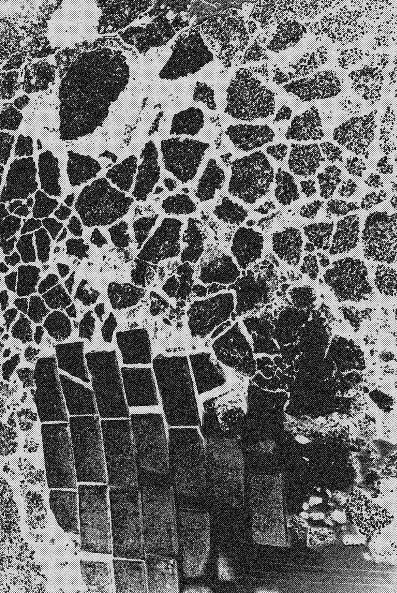
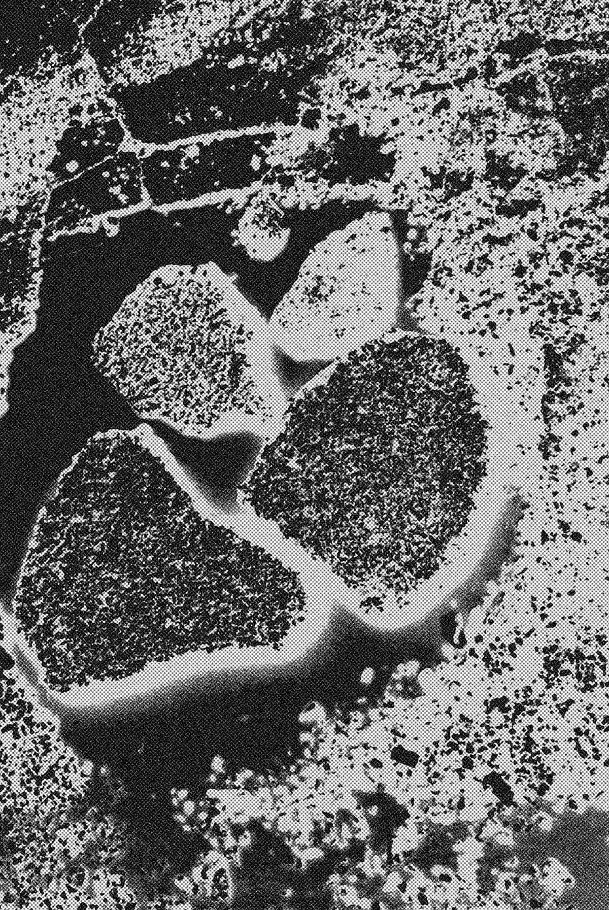
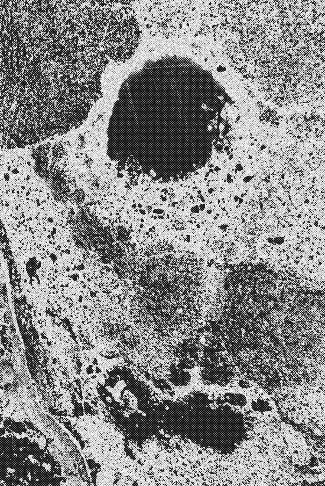
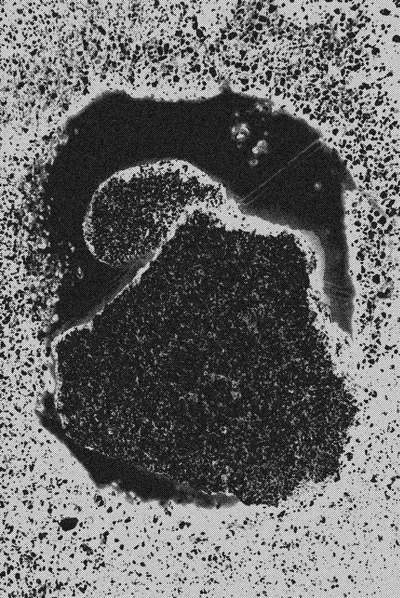
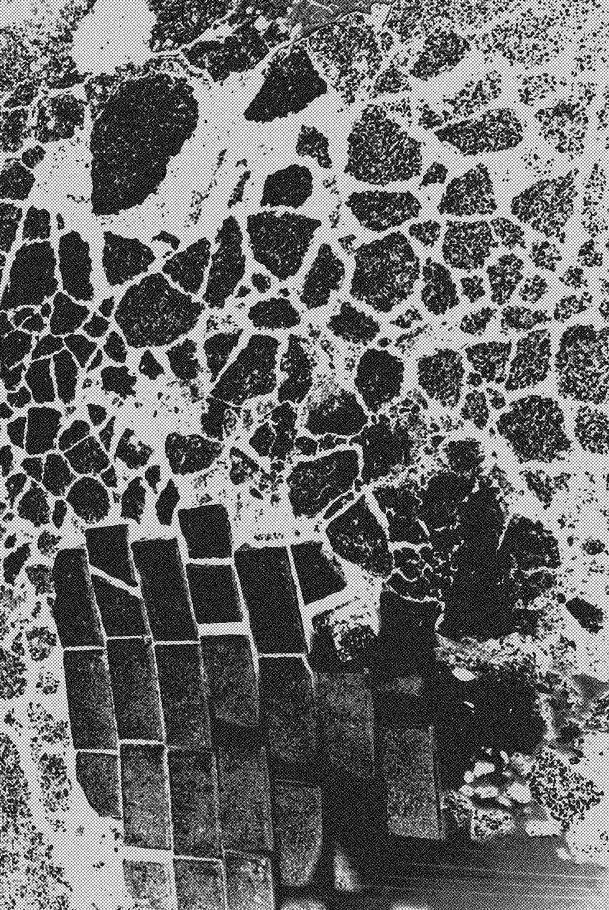
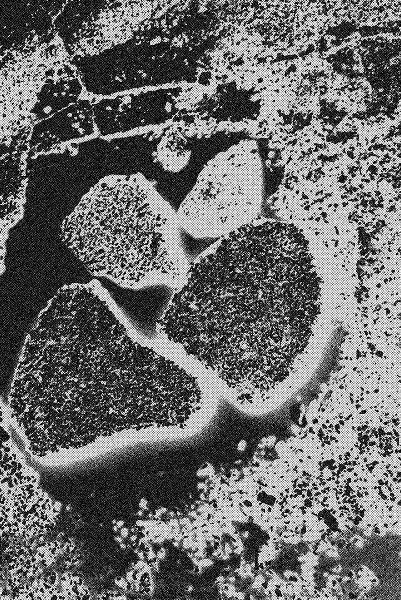
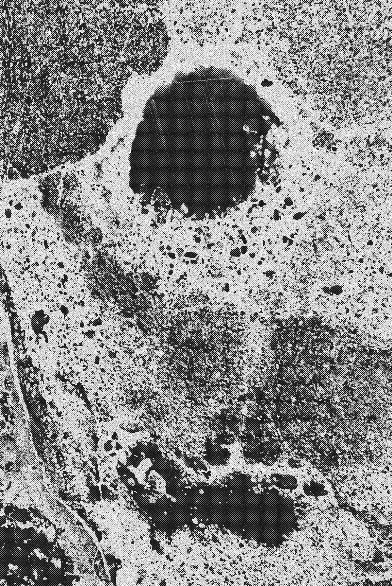
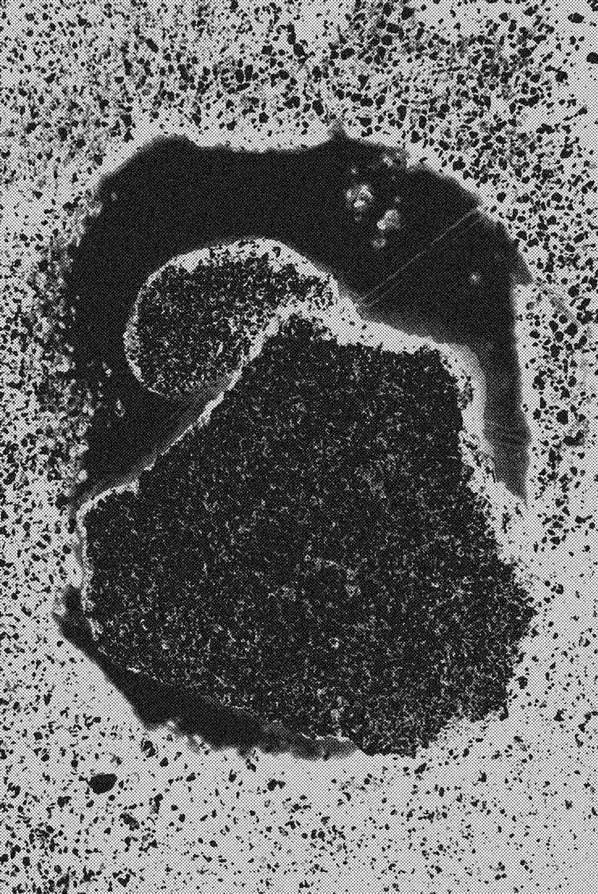

Проект „Гасеница“, дигитални принтови
Гласноста на ехото и длабочината на тишината владеат со сенките покажувајќи чудни знаци, знак?!
_
заминувајќи ги исцртаните чекори низ распуканиот простор и со прикриени визири, гласно шепотејќи низ
глувата јавност
нешто ти пречи _
копнежот по целото ˗ потреба за напред
повредата е минлива, болката може да трае
Project „Catarplilar“, digital prints
Volume and depth of the echo of silence rule shadows showing strange signs, sign?!
_ Leaving them drawn crack steps through space and undercover viewfinder, loudly whispering through the
deaf community
Something bothered _
longing for all ˗ need for forward
injury is transient, the pain can last
 






